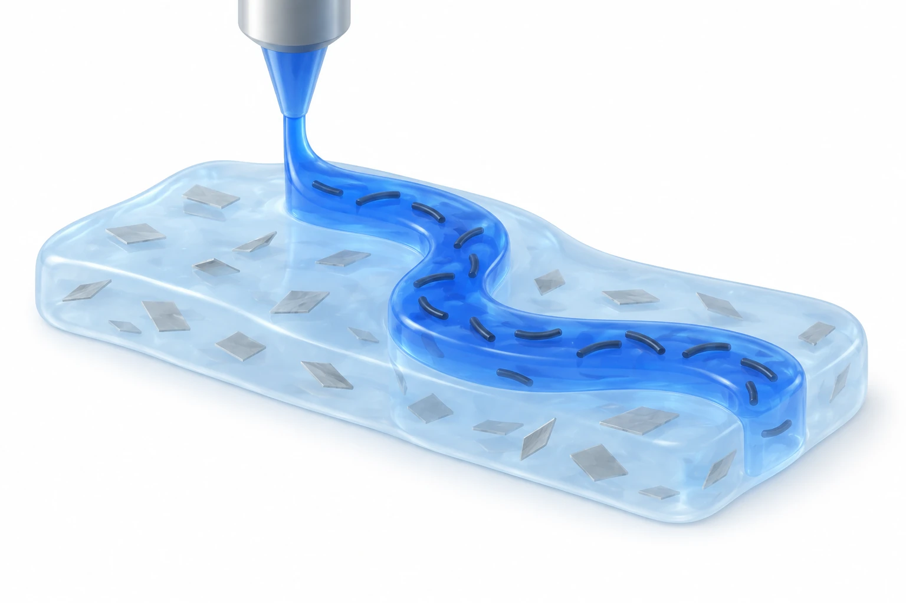

이 연구가 다루는 문제
나노점토와 탄소나노튜브를 활용해 하이드로젤 잉크의 인쇄성, 강성, 전도성을 조절하는 연구입니다. 형태를 지지하는 잉크와 전기를 전달하는 잉크의 역할을 나누고, 3D 인쇄 구조와 신축 센서로 연결합니다.
3D 인쇄형 하이드로젤 잉크와 연성 전자소자
연성 전자기기를 인쇄하려면 하이드로겔이 출력 중에는 흐르고, 출력 후에는 형태를 유지하며, 사용 중에는 피부 움직임을 따라가야 합니다. 센서로 쓰려면 전도 경로도 필요합니다. THIN은 공통 고분자 네트워크에 서로 다른 성분을 넣어 용도별 기능을 조절합니다.
어떻게 접근했나요?
THIN-X는 PVA/탄닌산/PAA 네트워크에 XLG 나노점토를 넣어 물리적 상호작용과 역학·형상 유지 특성을 조절합니다. THIN-C는 기능화된 탄소나노튜브를 넣어 전도성을 부여하며 기계적 특성도 함께 달라집니다. 따라서 충전재가 한 특성을 개선하더라도 전도도·강도·신축성이 모두 좋아지는 것은 아닙니다.

AI 생성 개념도입니다. 나노점토를 넣은 THIN-X의 지지 영역과 기능화 CNT를 넣은 THIN-C의 전도 경로를 구분합니다. 실제 조성, 충전재 분포, 기기 형상, 회복 결과를 재현하기보다 재료의 역할을 설명합니다.
회색 판은 나노점토, 짧은 곡선은 CNT의 기호입니다. 크기, 함량, 배향, 분산도, 연결된 전도망을 측정한 그림이 아닙니다. 내부 역할을 보여 주기 위해 투명하게 표현했으며 피부 접착이나 기기 전체의 복구를 뜻하지 않습니다.
논문 원그림을 복제한 이미지가 아니며, 원그림 재사용 허가를 의미하지 않습니다.
무엇을 어떻게 평가했나요?
유변학 시험은 압출과 형상 유지를, 기계적 시험은 변형을, 저항 측정은 감지 기능을 평가합니다. 돼지 피부 접착은 별도의 평가 항목입니다. 추가 NHS 기능화를 사용한 접착 결과를 모든 기본 조성의 특성으로 확대해서는 안 됩니다.
주요 결과
절단한 THIN-X를 5분간 재접합한 뒤 파단 응력과 응력–변형률 거동이 초기 수준으로 회복되었다고 보고했습니다. 재접합 부위 밖에서 파단된 관찰도 동적 결합을 통한 회복을 뒷받침합니다. 이는 재료의 기계적 회복 결과이며, 배선·피부 접착·전체 출력 기기가 동시에 복구되었음을 뜻하지는 않습니다.
아직 남아 있는 질문
비교할 때는 노즐과 출력 경로, 수화 상태, 시편 크기, 전극 배치를 맞춰야 합니다. 반복 사용 중 수분과 부착 상태의 변화도 남은 질문입니다. 확인한 시험만으로 사람에서의 장기 사용이나 임상 수준의 감지 성능이 입증되지는 않습니다.
본문과 그림에는 팽윤 계산식, 전도도 변화량 및 임피던스 단위가 일치하지 않는 부분이 있습니다. 해당 값들을 하나의 확정 성능으로 묶기보다 측정 조건과 표시 단위를 함께 살펴봐야 합니다.
함께 읽을 연구
3D printing of conducting polymers
DOI: 10.1038/s41467-020-15316-7 ↗
Yuk 등은 재료 자체가 전도하는 PEDOT:PSS 구조와 신경 전극을 인쇄합니다. THIN은 CNT를 넣은 하이드로겔 네트워크를 조절합니다.
외부 연구의 인쇄·특성·소자 부분을 읽었습니다. 전도 방식과 수화 상태가 달라 전도도만으로 재료의 순위를 정할 수는 없습니다.
본문을 참고한 설명RESEARCH NEWS
연구 소식
현재 연결된 소식이 없습니다.
해설에 사용한 자료
이 해설은 논문 본문과 원그림을 참고합니다. 보충자료와 원자료의 별도 검토는 완료하지 않았습니다.